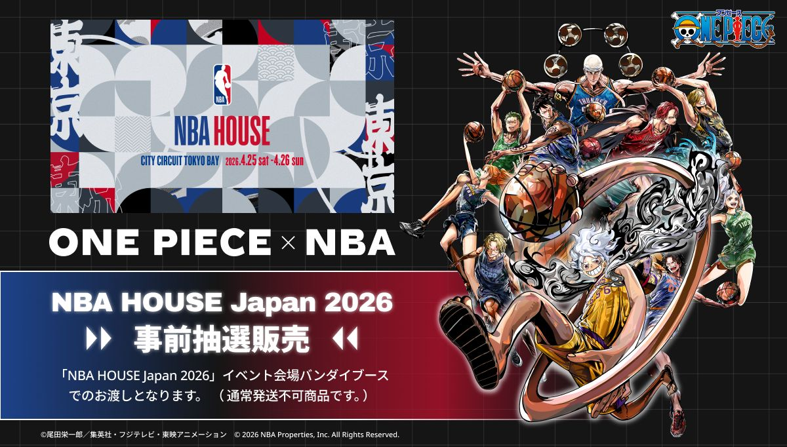
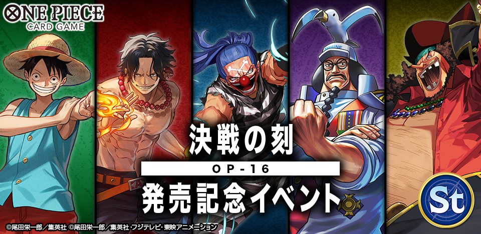
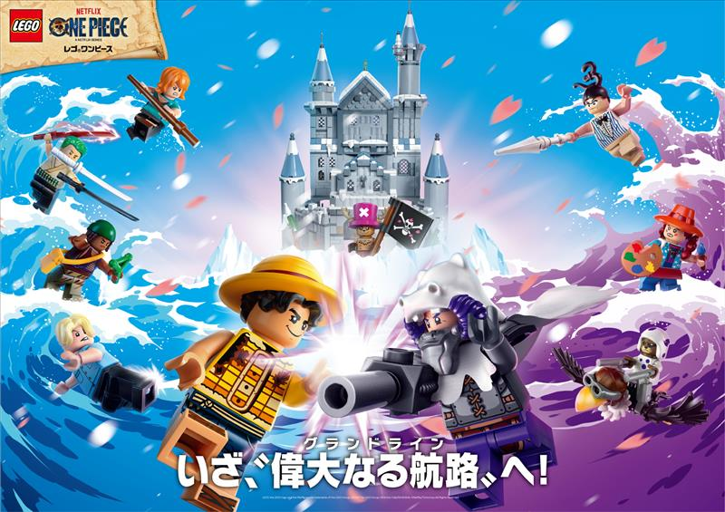

NOTICIAS
Vea las noticias más recientes!
¡Productos en Premium Bandai!
Los productos relacionados con "ONE PIECE" se venderán por sorteo en Premium Bandai, en el lugar del evento "NBA HOUSE Japón 2026", que se celebrará del 25 de abril (sábado) al 26 de abril (domingo) de 2026.

Momento de la Batalla Decisiva del Booster Pack [OP-16] ¡Evento conmemorativo de lanzamiento que se celebrará!
El Momento de la Batalla Decisiva del "Juego de Cartas ONE PIECE" se lanzará el sábado 30 de mayo de 2026. Para conmemorar el lanzamiento, ¡el mismo día se celebrará un evento conmemorativo! Las reuniones de intercambio se celebrarán en tiendas oficiales de todo el país. Esta vez, solo puedes usar cartas de líderes relacionadas con la Guerra de la Cumbre de Marineford, así que por favor consulta la web oficial para más detalles. Las solicitudes comenzarán el viernes 17 de abril, así que ¡por favor solicita!

¡Set de LEGO(R) con nuevos personajes de la serie "LEGO(R) One Piece"!
De la serie "LEGO One Piece", ¡ya está disponible un nuevo producto inspirado en la segunda temporada del drama de acción real de Netflix "ONE PIECE"! Las reservas anticipadas comenzarán hoy, 9 de abril de 2026 (jueves), y las ventas generales estarán disponibles a partir del 1 de agosto de 2026 (sábado)
